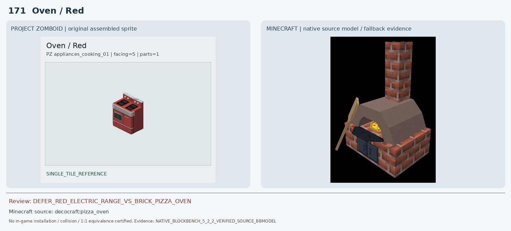
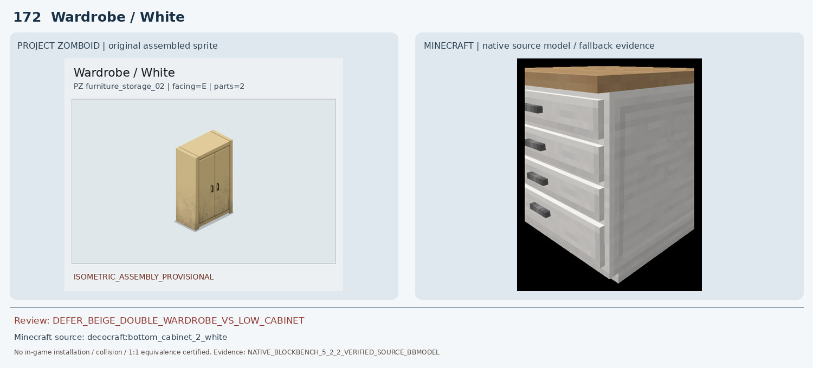
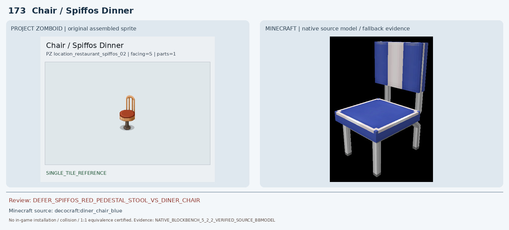
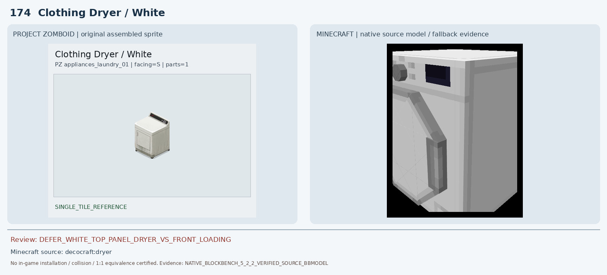
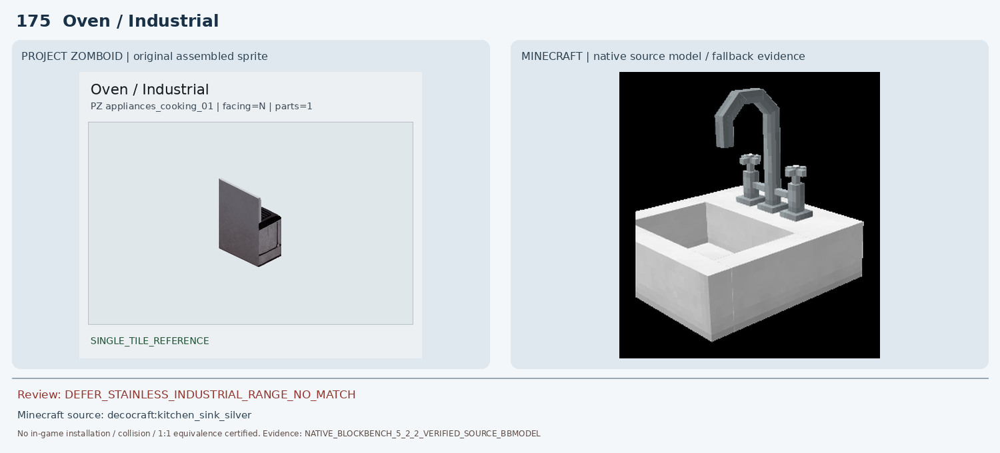
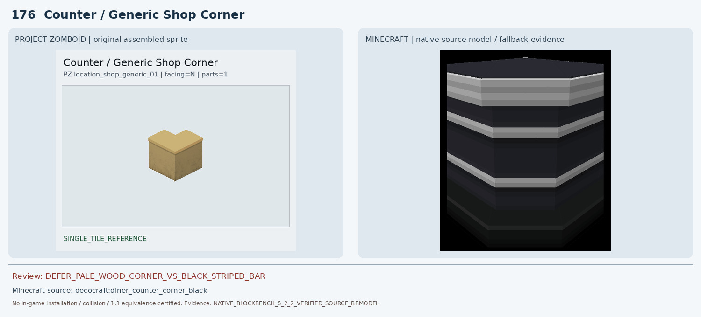
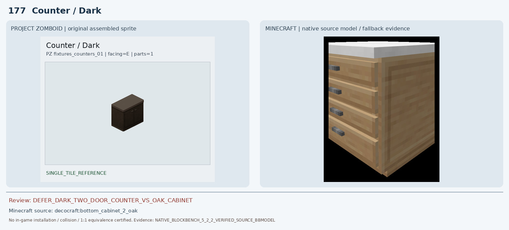
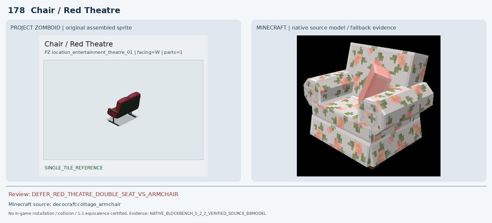
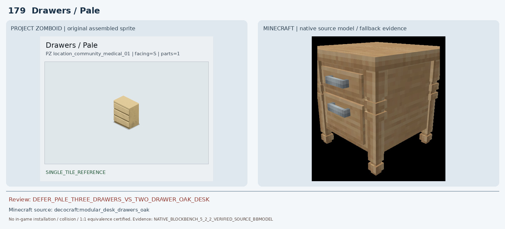
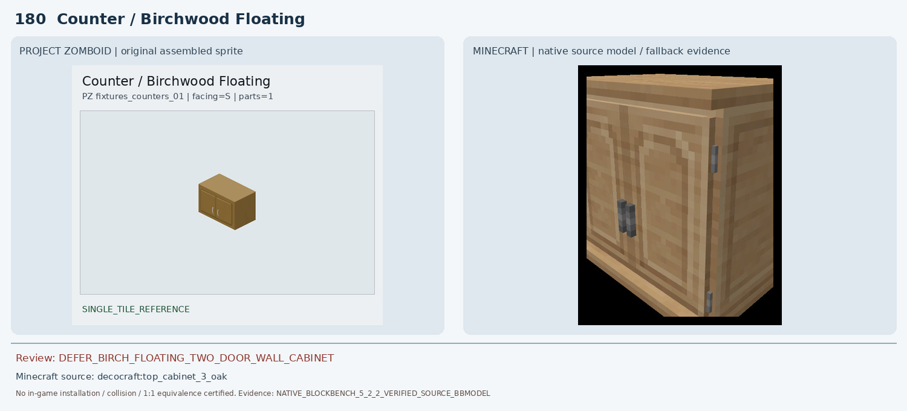

171 Oven / Red
DEFER_RED_ELECTRIC_RANGE_VS_BRICK_PIZZA_OVEN | DEFER

기존 decocraft:pizza_oven 네이티브 렌더는 벽돌 화덕+굴뚝+장작형 불구멍이며 PZ 붉은 전기레인지의 금속 본체, 버너, 다이얼, 오븐문이 모두 없다. 화덕을 전기레인지로 승인할 수 없다.
조건부 0 · 보류 10 · 인게임 최종 인증 0
DEFER_RED_ELECTRIC_RANGE_VS_BRICK_PIZZA_OVEN | DEFER

기존 decocraft:pizza_oven 네이티브 렌더는 벽돌 화덕+굴뚝+장작형 불구멍이며 PZ 붉은 전기레인지의 금속 본체, 버너, 다이얼, 오븐문이 모두 없다. 화덕을 전기레인지로 승인할 수 없다.
DEFER_BEIGE_DOUBLE_WARDROBE_VS_LOW_CABINET | DEFER

기존 Macaw Acacia Double Wardrobe는 회색 외장/주황 문으로 원본과 색이 정반대. 새 후보 Decocraft White Bottom Cabinet은 밝은 색은 유사해도 높이가 낮은 주방장으로 높은 옷장과 문/손잡이 배치가 다르다.
DEFER_SPIFFOS_RED_PEDESTAL_STOOL_VS_DINER_CHAIR | DEFER

기존 pfm:arm_chair_leather 네이티브 비교는 회색 직육면체 일부만 보이는 불완전 모델이라 좌석 형태를 확인할 수 없다. Decocraft Diner Chair Blue는 다리/등받이/좌판 재질·색·중앙 받침 구조가 다른 일반 의자 후보여서 1:1 아님.
DEFER_WHITE_TOP_PANEL_DRYER_VS_FRONT_LOADING | DEFER

Blockbench 5.2.2에서 새로 렌더한 Decocraft Dryer는 전면 상단 디지털 화면·왼쪽 다이얼, 전면의 사선 큰 손잡이와 각진 패널이 확인된다. PZ는 뒤쪽 상단으로 솟은 검은 제어판과 전면 왼쪽의 작은 세로 손잡이, 단순 직사각형 문을 가진다. 같은 건조기 계열이지만 조작부 위치·도어/손잡이 구조가 달라 1:1 승인 불가.
DEFER_STAINLESS_INDUSTRIAL_RANGE_NO_MATCH | DEFER

기존 Decocraft Pizza Oven은 벽돌 화덕과 굴뚝이 있는 전혀 다른 종류. 추가 스테인리스 주방 설비 후보 Kitchen Sink Silver도 싱크대이므로 조리 그릴·오븐문·높은 측면 판을 재현하지 못한다. 후보 불승인.
DEFER_PALE_WOOD_CORNER_VS_BLACK_STRIPED_BAR | DEFER

Decocraft Diner Counter Corner Black은 L형 상판과 코너 체적은 비슷하지만 검정·흰색 가로 줄무늬 금속/플라스틱 바 형태로 나무 질감·색상과 일치하지 않는다.
DEFER_DARK_TWO_DOOR_COUNTER_VS_OAK_CABINET | DEFER

기존 Macaw Acacia Counter는 주황 상판+회색 석재 측면으로 원본과 재질 불일치. Decocraft Bottom Cabinet 2 Oak는 수납장 계열이지만 밝은 참나무 색과 문·서랍 배치가 달라 어두운 2도어 카운터 대체로 승인 불가.
DEFER_RED_THEATRE_DOUBLE_SEAT_VS_ARMCHAIR | DEFER

기존 Paladin Oak Chair Classic Red는 막대 프레임 일부만 렌더되어 의자 전체를 입증하지 못한다. 새 Decocraft Cottage Armchair는 꽃무늬 쿠션과 크고 둥근 양팔걸이의 1인 가정용 의자이며, PZ 극장식 붉은 등받이/검정 금속 다리·연결형 구조와 다르다. PZ 좌석 개수는 추가 확인이 필요하다.
DEFER_PALE_THREE_DRAWERS_VS_TWO_DRAWER_OAK_DESK | DEFER

새 Blockbench 원본 렌더에서 Decocraft Modular Desk Drawers Oak는 전면 두 개의 큰 서랍, 돌출 회색 손잡이 두 개, 장식된 네 기둥/다리로 구성된다. PZ는 밝은 베이지 직육면체에 세 개의 얇은 수평 서랍과 돌출 손잡이 없는 평면이므로 서랍 수·손잡이·프레임이 명백히 다르다.
DEFER_BIRCH_FLOATING_TWO_DOOR_WALL_CABINET | DEFER

기존 Macaw Birch Counter는 흰 회색 석재 본체+나무 상판의 바닥 설치 블록이어서 원본과 다름. Decocraft Top Cabinet 3 Oak는 벽 부착형 주방 수납장 종류지만 문 분할, 손잡이 수, 길이와 상판 색상 일치가 검증되지 않아 확정 불가.